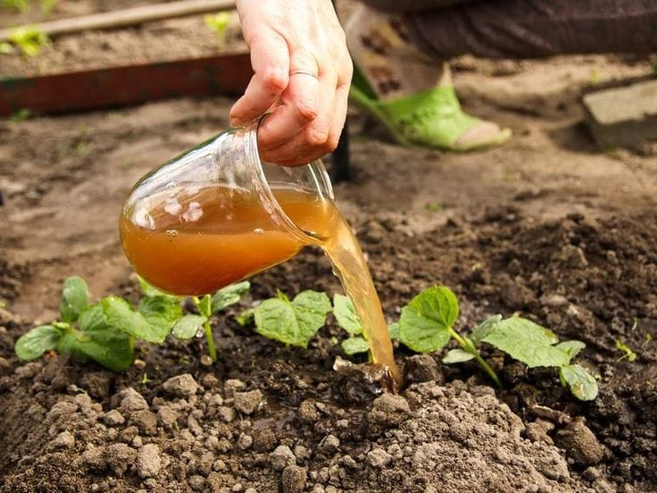

Pedro Coronel y Paez esteban - Responsable de Investigación y Desarrollo
Pedro Coronel y Paez esteban son los encargados de la investigación y el desarrollo del abono líquido. Su rol principal es investigar los materiales orgánicos más adecuados para la fabricación del abono y desarrollar nuevas fórmulas que maximicen la eficacia del producto.
Entre sus tareas se incluyen:
- Investigación sobre los nutrientes que requieren las plantas para su crecimiento.
- Estudio de las propiedades de diferentes residuos orgánicos (como estiércol, compost y desechos agrícolas) para determinar cuáles son los más adecuados para elaborar el abono líquido.
- Realización de pruebas de laboratorio para probar distintas combinaciones de ingredientes.
- Elaboración de informes técnicos con los resultados de las investigaciones y las pruebas realizadas.
Jhojan Niño y Daniel Ricardo y Dayana Beltran- Responsable de la Produccion y Logistica
Johan Niño y Daniel Ricardo y Dayana Beltran se encarga de las producciónes y logísticas del abono líquido. Su función es garantizar que la producción se lleve a cabo de manera eficiente y que el producto final cumpla con los estándares de calidad establecidos.
Algunas de sus responsabilidades son:
- Planificación y organización de la producción del abono líquido.
- Supervisión del proceso de fabricación para asegurar que se sigan los procedimientos correctos.
- Control de calidad de los productos para garantizar que sean eficaces y seguros para su uso.
- Coordinación de la distribución del abono líquido a los puntos de venta o a los clientes finales.
- Gestión de inventarios y suministro de los materiales necesarios para la producción. 